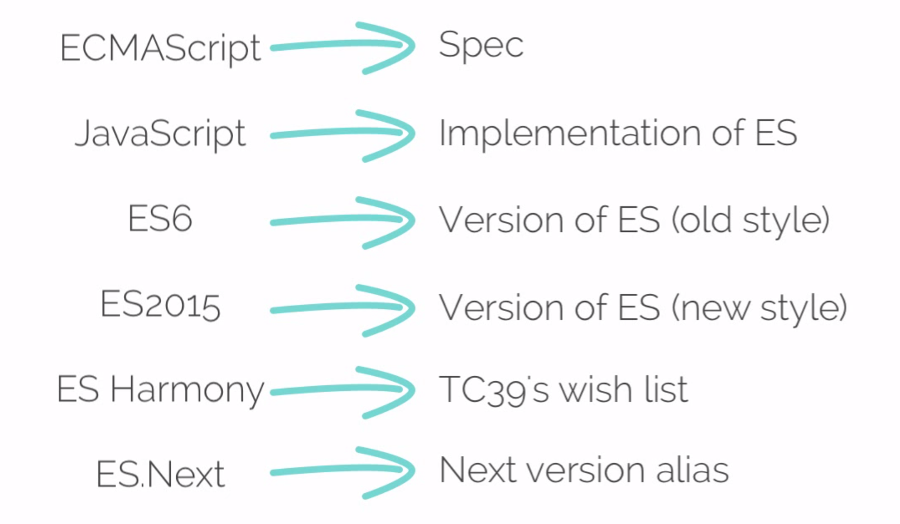
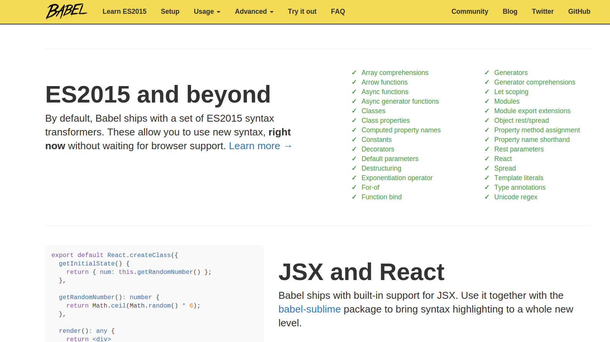
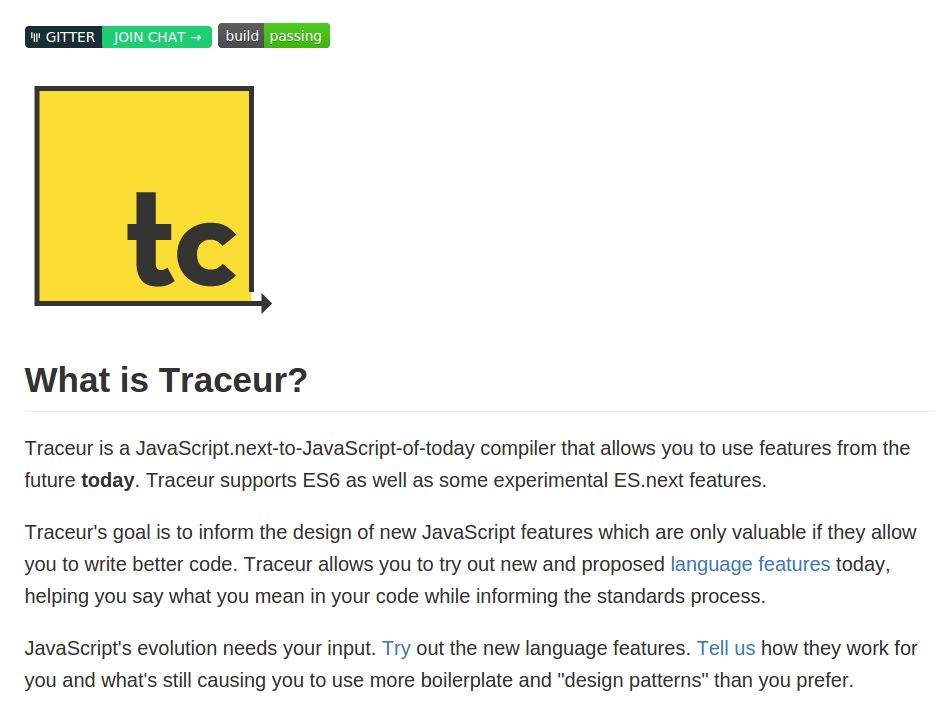

- By Arindam Paul / @geek_paul
“I skate to where the puck is going to be, not where it has been.”
~ Wayne Gretzky
The Fetch API provides a JavaScript interface for accessing an manipulating parts of the HTTP pipeline, such as requests and responses. It also provides a global fetch() method that provides an easy, logical way to fetch resources asynchronously across the network.
var myImage = document.querySelector('img');
fetch('flowers.jpg')
.then(function(response) {
return response.blob();
})
.then(function(myBlob) {
var objectURL = URL.createObjectURL(myBlob);
myImage.src = objectURL;
});
var myHeaders = new Headers();
var myInit = { method: 'GET',
headers: myHeaders,
mode: 'cors',
cache: 'default' };
fetch('flowers.jpg',myInit)
.then(function(response) {
return response.blob();
})
.then(function(myBlob) {
var objectURL = URL.createObjectURL(myBlob);
myImage.src = objectURL;
});
if('serviceWorker' in navigator) {
navigator.serviceWorker.register('/my-app/sw.js', {
scope: '/my-app/'
});
}
self.addEventListener('fetch', function(event) {
event.respondWith(new Response("Hello world!"));
});
Service Workers become progressive enhancement for offline support
self.addEventListener('install', function(event){
event.waitUntil(
caches.open('my-offline-cache-v1').then( function(cache) {
return cache.addAll([
'/site.js',
'/images/foo.jpg',
'/offline.html'
]);
});
);
});
self.addEventListener('fetch', function(event){
if (navigator.online) {
event.respondWith( onlineRequest(event.request));
} else {
event.respondWith( offlineRequest(event.request));
}
});
function onlineRequest(request) {
return caches.match(request)
.then(function(response){
if(response) {
return response;
} else {
return fetch(request);
}
}
);
}
“Simplicity is about subtracting the obvious and adding the meaningful.”
~ John Maeda
ES6 is a shorthand for EcmaScript6 language specification for next version of JavaScript
Transpilers are source to source compilation which converts a specific format of the source to be semantically equivalent source in other formats.
|

Babel creator Babel Example |

With love from Google.. Traceur Example |
define(['jquery'] , function ($) {
return function () {};
});
var $ = require('jquery');
exports.myExample = function () {};
As commonJS is used by Node.js, it gives a uniform way of handling modules
ES6 proposes a uniform module loader which can be used in both server side and client side. It primarily has two parts,
//------ lib.js ------
export const sqrt = Math.sqrt;
export function square(x) {
return x * x;
}
export function diag(x, y) {
return sqrt(square(x) + square(y));
}
//------ main.js ------
import { square, diag } from 'lib';
console.log(square(11)); // 121
console.log(diag(4, 3)); // 5
//------ myFunc.js ------
export default function () { ... };
//------ main1.js ------
import myFunc from 'myFunc';
myFunc();
// or
//------ MyClass.js ------
export default class { ... };
//------ main2.js ------
import MyClass from 'MyClass';
let inst = new MyClass();
“Perfection is reached not when there is nothing more to add, but when there is nothing more to subtract.”
~ Antoine de Saint-Exupéry